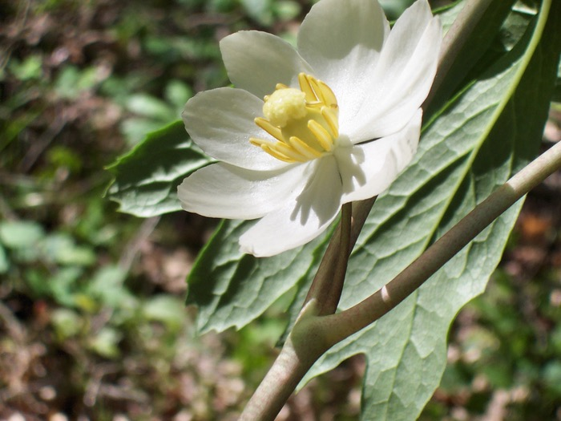
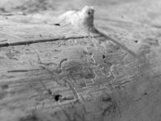

Next Photo
-
Vote
Macro Flower
A baby paw paw tree's blooming flower looks huge in my lens. The flowers dainty beauty is captured in this close up. The shadows that play on the petals and the colors make the picture stand out. The crisp focus throughout the picture and the aperture falloff are appealing to me. These little plants are growing by the thousands when spring rolls around each year. Each gets a few of these little buds, but only a couple of them survive to become trees.
More...
ID: 10
Title: Macro Flower
Description: A baby paw paw tree's blooming flower looks huge in my lens. The flowers dainty beauty is captured in this close up. The shadows that play on the petals and the colors make the picture stand out. The crisp focus throughout the picture and the aperture falloff are appealing to me. These little plants are growing by the thousands when spring rolls around each year. Each gets a few of these little buds, but only a couple of them survive to become trees.
Keywords: macrow flower white pawpaw paw light sun woods floor small crisp
Hidden: n
Date added: Sat Mar 04 16:45:25 CST 2006
Date taken: Sat Apr 30 09:27:09 CDT 2005
Camera: EASTMAN KODAK COMPANY.KODAK CX6330 ZOOM DIGITAL CAMERA.
Resolution: 2032x1524
Mode:
Shutter speed: 85/10
Flash: 16
Exposure time: 1/350
Iso:
Metering: 5
Aperture: 45/10
Focal length: 168/10
Artist: NathanielGuy Mahieu
Copyright: 2006 NathanielGuy Mahieu
Views: 2544
